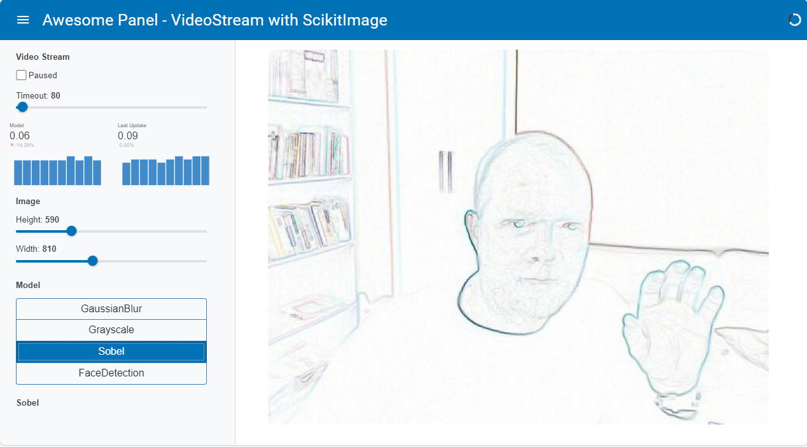

Video Stream
hugging face
pyodide
video
Image processing with Pillow and Scikit Image
Introduction
This app takes a videostream from your web cam and applies different filters supplied by Pillow and Scikit Image.
You can change the model in the sidebar. The left plot shows how much time it takes to run the model on the image. The right plot shows the time since the last image was processed.
This app is heavily inspired by a similar realtime image processing app by Whitphx.
App
This app runs entirely in the browser via Pyodide and panel convert.
Code
Show
import base64
import io
import time
import numpy as np
import param
import PIL
import skimage
from PIL import Image, ImageFilter
from skimage import data, filters
from skimage.color.adapt_rgb import adapt_rgb, each_channel
from skimage.draw import rectangle
from skimage.exposure import rescale_intensity
from skimage.feature import Cascade
import panel as pn
import sys
HEIGHT = 600 # pixels
WIDTH = 600 # pixels
TIMEOUT = 500 # milliseconds
if sys.platform == 'emscripten':
TIMEOUT=100
CSS="""
.mdc-drawer {background: var(--light-bg-color) !important;}"""
pn.extension(raw_css=[CSS], sizing_mode="stretch_width")
class ImageModel(pn.viewable.Viewer):
"""Base class for image models."""
def __init__(self, **params):
super().__init__(**params)
with param.edit_constant(self):
self.name = self.__class__.name.replace("Model", "")
self.view = self.create_view()
def __panel__(self):
return self.view
def apply(self, image: str, height: int = HEIGHT, width: int = WIDTH) -> str:
"""Transforms a base64 encoded jpg image to a base64 encoded jpg BytesIO object"""
raise NotImplementedError()
def create_view(self):
"""Creates a view of the parameters of the transform to enable the user to configure them"""
return pn.Param(self, name=self.name)
def transform(self, image):
"""Transforms the image"""
raise NotImplementedError()
class PILImageModel(ImageModel):
"""Base class for PIL image models"""
@staticmethod
def to_pil_img(value: str, height=HEIGHT, width=WIDTH):
"""Converts a base64 jpeg image string to a PIL.Image"""
encoded_data = value.split(",")[1]
base64_decoded = base64.b64decode(encoded_data)
image = Image.open(io.BytesIO(base64_decoded))
image.draft("RGB", (height, width))
return image
@staticmethod
def from_pil_img(image: Image):
"""Converts a PIL.Image to a base64 encoded JPG BytesIO object"""
buff = io.BytesIO()
image.save(buff, format="JPEG")
return buff
def apply(self, image: str, height: int = HEIGHT, width: int = WIDTH) -> io.BytesIO:
pil_img = self.to_pil_img(image, height=height, width=width)
transformed_image = self.transform(pil_img)
return self.from_pil_img(transformed_image)
def transform(self, image: PIL.Image) -> PIL.Image:
"""Transforms the PIL.Image image"""
raise NotImplementedError()
class NumpyImageModel(ImageModel):
"""Base class for np.ndarray image models"""
@staticmethod
def to_np_ndarray(image: str, height=HEIGHT, width=WIDTH) -> np.ndarray:
"""Converts a base64 encoded jpeg string to a np.ndarray"""
pil_img = PILImageModel.to_pil_img(image, height=height, width=width)
return np.array(pil_img)
@staticmethod
def from_np_ndarray(image: np.ndarray) -> io.BytesIO:
"""Converts np.ndarray jpeg image to a jpeg BytesIO instance"""
if image.dtype == np.dtype("float64"):
image = (image * 255).astype(np.uint8)
pil_img = PIL.Image.fromarray(image)
return PILImageModel.from_pil_img(pil_img)
def apply(self, image: str, height: int = HEIGHT, width: int = WIDTH) -> io.BytesIO:
np_array = self.to_np_ndarray(image, height=height, width=width)
transformed_image = self.transform(np_array)
return self.from_np_ndarray(transformed_image)
def transform(self, image: np.ndarray) -> np.ndarray:
"""Transforms the np.array image"""
raise NotImplementedError()
class Timer(pn.viewable.Viewer):
"""Helper Component used to show duration trends"""
_trends = param.Dict()
def __init__(self, **params):
super().__init__()
self.last_updates = {}
self._trends = {}
self._layout = pn.Row(**params)
def time_it(self, name, func, *args, **kwargs):
"""Measures the duration of the execution of the func function and reports it under the
name specified"""
start = time.time()
result = func(*args, **kwargs)
end = time.time()
duration = round(end - start, 2)
self._report(name=name, duration=duration)
return result
def inc_it(self, name):
"""Measures the duration since the last time inc_it was called and reports it under the
specified name"""
start = self.last_updates.get(name, time.time())
end = time.time()
duration = round(end - start, 2)
self._report(name=name, duration=duration)
self.last_updates[name] = end
def _report(self, name, duration):
if not name in self._trends:
self._trends[name] = pn.indicators.Trend(
name=name,
data={"x": [1], "y": [duration]},
height=100,
width=150,
sizing_mode="fixed",
)
self.param.trigger("_trends")
else:
trend = self._trends[name]
next_x = max(trend.data["x"]) + 1
trend.stream({"x": [next_x], "y": [duration]}, rollover=10)
@param.depends("_trends")
def _panel(self):
self._layout[:] = list(self._trends.values())
return self._layout
def __panel__(self):
return pn.panel(self._panel)
def to_instance(value, **params):
"""Converts the value to an instance
Args:
value: A param.Parameterized class or instance
Returns:
An instance of the param.Parameterized class
"""
if isinstance(value, param.Parameterized):
value.param.update(**params)
return value
return value(**params)
class VideoStreamInterface(pn.viewable.Viewer):
"""An easy to use interface for a VideoStream and a set of transforms"""
video_stream = param.ClassSelector(
class_=pn.widgets.VideoStream, constant=True, doc="The source VideoStream", allow_refs=False,
)
height = param.Integer(
default=HEIGHT,
bounds=(10, 2000),
step=10,
doc="""The height of the image converted and shown""",
)
width = param.Integer(
default=WIDTH,
bounds=(10, 2000),
step=10,
doc="""The width of the image converted and shown""",
)
model = param.Selector(doc="The currently selected model")
def __init__(
self,
models,
timeout=TIMEOUT,
paused=False,
**params,
):
super().__init__(
video_stream=pn.widgets.VideoStream(
name="Video Stream",
timeout=timeout,
paused=paused,
height=0,
width=0,
visible=False,
format="jpeg",
),
**params,
)
self.image = pn.pane.JPG(
height=self.height, width=self.width, sizing_mode="fixed"
)
self._updating = False
models = [to_instance(model) for model in models]
self.param.model.objects = models
self.model = models[0]
self.timer = Timer(sizing_mode="stretch_width")
self.settings = self._create_settings()
self._panel = self._create_panel()
def _create_settings(self):
return pn.Column(
pn.Param(
self.video_stream,
parameters=["timeout", "paused"],
widgets={
"timeout": {
"widget_type": pn.widgets.IntSlider,
"start": 10,
"end": 2000,
"step": 10,
}
},
),
self.timer,
pn.Param(self, parameters=["height", "width"], name="Image"),
pn.Param(
self,
parameters=["model"],
expand_button=False,
expand=False,
widgets={
"model": {
"widget_type": pn.widgets.RadioButtonGroup,
"orientation": "vertical",
"button_type": "primary",
"button_style": "outline"
}
},
name="Model",
),
self._get_transform,
)
def _create_panel(self):
return pn.Row(
self.video_stream,
pn.layout.HSpacer(),
self.image,
pn.layout.HSpacer(),
sizing_mode="stretch_width",
align="center",
)
@param.depends("height", "width", watch=True)
def _update_height_width(self):
self.image.height = self.height
self.image.width = self.width
@param.depends("model")
def _get_transform(self):
# Hack: returning self.transform stops working after browsing the transforms for a while
return self.model.view
def __panel__(self):
return self._panel
@param.depends("video_stream.value", watch=True)
def _handle_stream(self):
if self._updating:
return
self._updating = True
if self.model and self.video_stream.value:
value = self.video_stream.value
try:
image = self.timer.time_it(
name="Model",
func=self.model.apply,
image=value,
height=self.height,
width=self.width,
)
self.image.object = image
except PIL.UnidentifiedImageError:
print("unidentified image")
self.timer.inc_it("Last Update")
self._updating = False
class GaussianBlurModel(PILImageModel):
"""Gaussian Blur Model
https://pillow.readthedocs.io/en/stable/reference/ImageFilter.html#PIL.ImageFilter.GaussianBlur
"""
radius = param.Integer(default=0, bounds=(0, 10))
def transform(self, image: Image):
return image.filter(ImageFilter.GaussianBlur(radius=self.radius))
class GrayscaleModel(NumpyImageModel):
"""GrayScale Model
https://scikit-image.org/docs/0.15.x/auto_examples/color_exposure/plot_rgb_to_gray.html
"""
def transform(self, image: np.ndarray):
grayscale = skimage.color.rgb2gray(image[:, :, :3])
return skimage.color.gray2rgb(grayscale)
class SobelModel(NumpyImageModel):
"""Sobel Model
https://scikit-image.org/docs/0.15.x/auto_examples/color_exposure/plot_adapt_rgb.html
"""
def transform(self, image):
@adapt_rgb(each_channel)
def sobel_each(image):
return filters.sobel(image)
return rescale_intensity(1 - sobel_each(image))
@pn.cache()
def get_detector():
"""Returns the Cascade detector"""
trained_file = data.lbp_frontal_face_cascade_filename()
return Cascade(trained_file)
class FaceDetectionModel(NumpyImageModel):
"""Face detection using a cascade classifier.
https://scikit-image.org/docs/0.15.x/auto_examples/applications/plot_face_detection.html
"""
scale_factor = param.Number(default=1.4, bounds=(1.0, 2.0), step=0.1)
step_ratio = param.Integer(default=1, bounds=(1, 10))
size_x = param.Range(default=(60, 322), bounds=(10, 500))
size_y = param.Range(default=(60, 322), bounds=(10, 500))
def transform(self, image):
detector = get_detector()
detected = detector.detect_multi_scale(
img=image,
scale_factor=self.scale_factor,
step_ratio=self.step_ratio,
min_size=(self.size_x[0], self.size_y[0]),
max_size=(self.size_x[1], self.size_y[1]),
)
for patch in detected:
rrr, ccc = rectangle(
start=(patch["r"], patch["c"]),
extent=(patch["height"], patch["width"]),
shape=image.shape[:2],
)
image[rrr, ccc, 0] = 200
return image
component = VideoStreamInterface(
models=[
GaussianBlurModel,
GrayscaleModel,
SobelModel,
FaceDetectionModel,
]
)
pn.Row(pn.Row(component.settings, max_width=300), component)
pn.template.MaterialTemplate(
site="Awesome Panel",
title="VideoStream with ScikitImage",
sidebar=[component.settings],
main=[component],
).servable()Gif

Mp4
Png

Social
Please share on social media. Thanks.